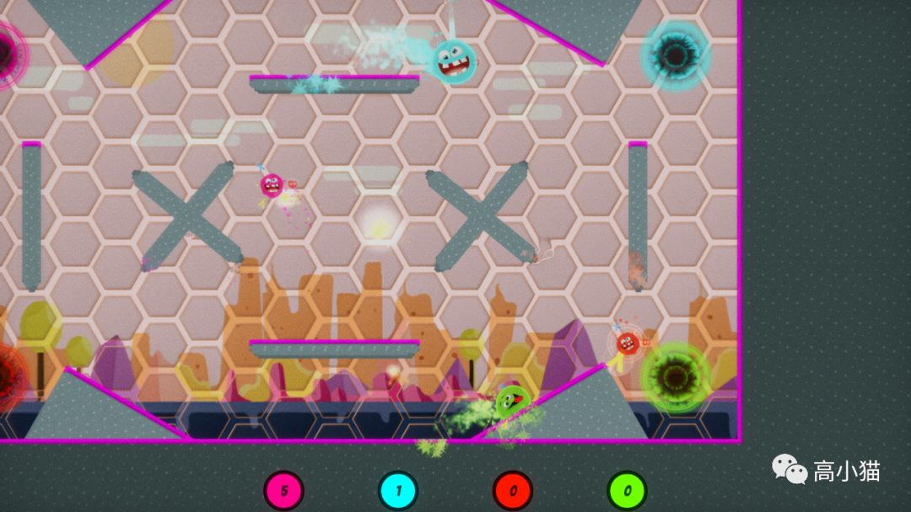
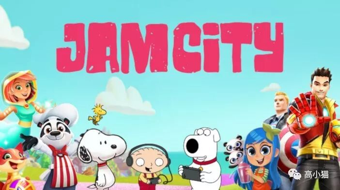
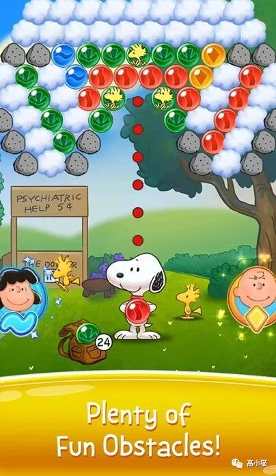
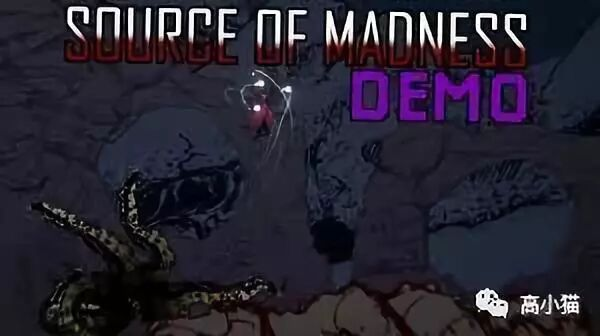

注：上次没贴完的那些示例环境可以去我的b站空间观看
（https://space.bilibili.com/421694）。我们官方一共提供了12个示例环境，涵盖了所有的Unity ML-Agents的功能以及用法。里面展示了我们官方给出的在不同的游戏场景下的对应的推荐训练方案，是绝佳的学习材料。
上次大致介绍了一下我们组在做的Unity ML-Agents Toolkit这个开源项目。它可以帮助人们把任何用Unity做出的游戏环境用于深度强化学习和模仿学习的人工智能训练。
那么就有人会问我了，你们这个东西到底有什么用呢？是不是跟Deepmind，OpenAI他们差不多，主要用来发paper。看着酷炫，跟工业界没什么关系呢？
那这一篇我就来说说我们跟工业界的合作故事。我们Unity作为一个游戏引擎公司，对应的工业界就是众多的游戏工作室了。可以说有越多的游戏用了我们的项目，我们就离成功越近。
一. Jam City

Jam City是我们第一个合作的游戏公司。我之前也没有听说过他们，后来一查发现他们非常赚钱，专门做休闲类游戏的。
最一开始是他们的一个工程师联系到我们，说他们在尝试用我们的项目来制作一个可以玩三消类游戏的机器人。于是我们就跟他们的那个工程师展开了一系列的合作，尝试做了一些调优。
不过我们做了不少努力效果都不太理想。主要三消类的游戏要想玩得好，还是需要比较偏planning的算法，Unity ML-Agents并不支持。而且Unity引擎本身也不能做状态reset，所以planning算法实现起来比较困难。
后来我们换了一个游戏跟他们合作。游戏的名字叫Snoopy Pop，是一个类似于泡泡龙的游戏，在App Store上排名还蛮高的。
这个游戏我们也做了不少的observation，action，reward的调优，最终得出的结果还算不错。这边有一篇blog（https://blogs.unity3d.com/2019/04/15/unity-ml-agents-toolkit-v0-8-faster-training-on-real-games/），里面有大致介绍我们是怎么设置的训练的，当然里面有很多坑都一笔带过了。

二. What Up Games
这家Indie游戏工作室非常小，只有两个人，是一家夫妻店。不过他们从ml-agents v0.2的时候就开始跟我们合作了。最关键的是，所有的训练都是他们自己完成的，像是一些observation，action space的设置，是那个老公一点一点自己摸索出来的，经历了非常久的迭代，着实了不起。
他们把我们的项目用在了他们当时正在开发的一款叫Jelly Bowl的Xbox游戏上。玩起来有点像实时的百战天虫，也有绳索这一类移动的工具。
可能百战天虫的老玩家会知道，当年游戏里的AI是蛮蠢的，尤其是绳索根本不会用，经常乱用一下就放弃了。而在这个实时的百战天虫里，要是AI不会利用绳索移动，根本就没法跟人对战了。
而要用传统游戏AI的决策树的方式来写一套会操控绳索的AI，绝对是一件非常困难的任务。因为根据不同的地形，不同的当前速度，要想利用绳索从一个点移动到另外一个点，需要的方式都是很不一样的，很难用一套简单有效的逻辑来实现。
于是他们想到了用我们的强化学习的工具来训练AI实现这一功能。在强化学习中，由于训练的过程就是AI不断试错的过程，因此AI会学会在各种情况下的处理方式，从而避免了人去手工地用决策树的方式来写这样一个AI。
在后续我们跟他们的交流中，他们说我们的工具不仅仅给了他们一个很厉害的AI，还帮助他们找到了很多的游戏中的bug。比如说有的时候AI会在一顿操作以后完成一些本不被允许的操作，导致穿墙之类的情况发生。如果要让他们这么小的一个团队来做大量的测试，预先找出游戏代码中类似的bug，对他们来说几乎是不可能的任务。而由于强化学习本身的特点就是在各种状态下做各种动作，因此很好地完成了测试这一重要的任务。
Jelly Bowl这款游戏似乎至今还没有正式上线，不过我们在去年的Unite LA大会上已经demo过这款游戏在Xbox上搭载了ml-agents训练出的AI的表现了。具体的视频可以参见我们的这个帖子（https://blogs.unity3d.com/2019/03/01/unity-ml-agents-toolkit-v0-7-a-leap-towards-cross-platform-inference/），里面有一小段AI对战的视频，用的就是ml-agents训练出来的AI。
三. Carry Castle
这是一家来自瑞典的游戏工作室。他们的工程师似乎对机器学习非常感兴趣，不仅仅尝试了我们的工具，还尝试了GAN来生成他们的游戏背景效果。
他们正在制作的游戏叫Source of madness，是一个恐怖游戏。在游戏里会有一些怪，长得像章鱼一样 (下图左下角的这种)。这种怪应该会卷动自己的触手，然后扑向玩家。

可是要让这个扑的动作不那么僵硬，其实还是有点难度的。因为章鱼怪的触手在不同的地形下，目标点不同的话，它的触手的动作都应该有点不太一样。要想让章鱼怪的动作自然，需要计算出每个触手应该怎么动，最终章鱼怪才能朝着符合物理规律的，同时也是我们所希望的方向移动。
那怎么做这样的计算呢？这个游戏工作室就想到了利用我们的强化学习的工具。他们设置了一个训练场景，让这个章鱼怪在里面不断地做移动和跳跃的训练。在训练的过程中，他们不断地变换着场景里的地形和障碍物。最终经过训练，章鱼怪就知道了在不同的地形下要如何摆动它的触手，才能“正确”地扑向玩家
在今年的Unite哥们哈根大会上，我们组有邀请他们和我们一起上台演讲，视频链接在这儿，相关内容在大约35分钟处（https://www.youtube.com/watch?v=2M3ytOo7LQQ）。
嘛，大概就是这样。我们目前还在跟一些别的游戏工作室谈合作，也正在尝试一些不同的游戏类型。以上的就是一些至今为止比较成功的在正式发行的游戏上的案例啦。
下一篇有关ml-agents，我有点不知道聊啥了，如果没有谁对这个话题特别刚兴趣的话，我就准备换个话题啦。
👋